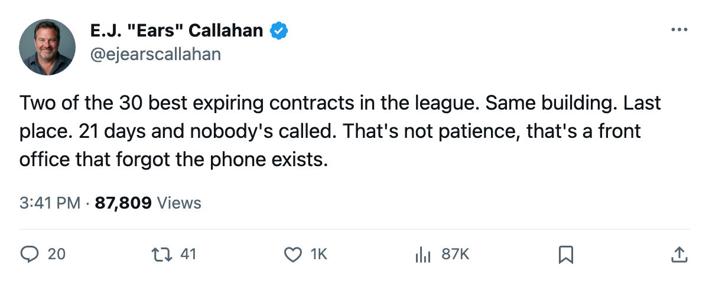
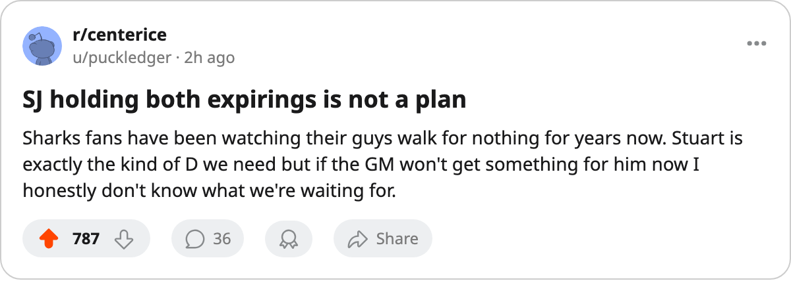

RUMOR METER: [[team:SJ]] Holds the 19th and 26th Best Expirings. Last in the Pacific. 21 Days. Silence.
Brad Stuart and Marco Sturm are both contract-year names who could fetch real return. San Jose sits at 58 points and hasn't made a call.
 E.J. "Ears" CallahanInsider · The Hot Stove
E.J. "Ears" CallahanInsider · The Hot Stove

Both top-30 expirings still on the shelf 21 days out

 Brad Stuart79 is 25 years old. He carries 42 points from the blue line in 63 games on a $1.80M cap hit. The Bureau's Book has him at 85. His contract expires July 28. He is 19th among the league's 30 best expiring deals.
Brad Stuart79 is 25 years old. He carries 42 points from the blue line in 63 games on a $1.80M cap hit. The Bureau's Book has him at 85. His contract expires July 28. He is 19th among the league's 30 best expiring deals.
 Marco Sturm78 is 26. He has 75 points in 59 games for $1.00M. His grade is 84, the 26th-best expiring on the board.
Marco Sturm78 is 26. He has 75 points in 59 games for $1.00M. His grade is 84, the 26th-best expiring on the board.
Both play for  San Jose Sharks, which sits last in the Pacific at 58 points, 23 back of Dallas at 81, with what the calendar has as the trade deadline 21 days from today.
San Jose Sharks, which sits last in the Pacific at 58 points, 23 back of Dallas at 81, with what the calendar has as the trade deadline 21 days from today.
San Jose is $18.76M profitable this year. Nobody is forcing their hand, and that is the problem. A club with no financial pressure and no playoff math has the luxury of waiting for the phone to ring. But the phone is not ringing. Not for Stuart, not for Sturm.
Both men sit at 89 morale. They are not among the 15 unhappiest in the league. They are not unhappy enough to make noise, not happy enough to sign. They are in the middle, which is the zone where an expiring player stops existing as a trade candidate.
The desk's read: San Jose has 5 draft picks and 1 first-rounder, no urgency to rebuild, and a $42.78M payroll that is nowhere near a problem. If they hold both men into July, they lose both for nothing. If they move one now, they get a piece. If they move both, they get two pieces and a clear summer.
What would a return look like? Stuart at 25, 85 overall, 42 points, $1.80M is the kind of defenseman a contender with cap room pays for at the deadline. Sturm at 84 with 75 points on $1.00M is cheaper but no less valuable; a club with a hole on the left side gets a 26-year-old middle-six wing at a bargain rate for 20 games plus a player who might re-sign.
The room knows. The club morale average is 88.9, 11th in the league. Neither man has made a statement. Neither has asked out. Two players content to wait and let free agency sort it out.
A league source close to the situation says nothing is close. The word "close" is doing a lot of work in that sentence. What the calendar has as the trade deadline is 21 days away. The desk expects a move. The desk has been wrong before.

